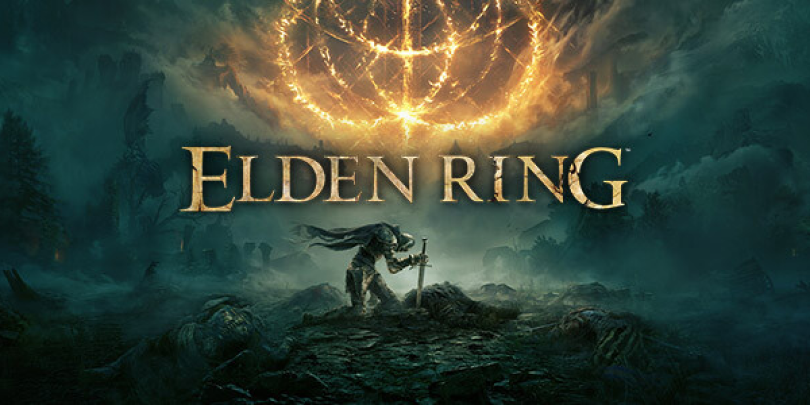
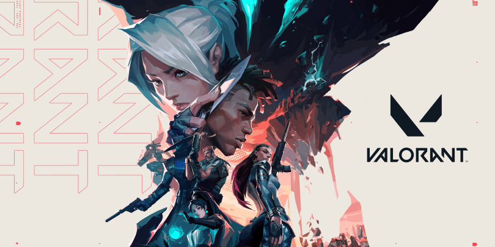
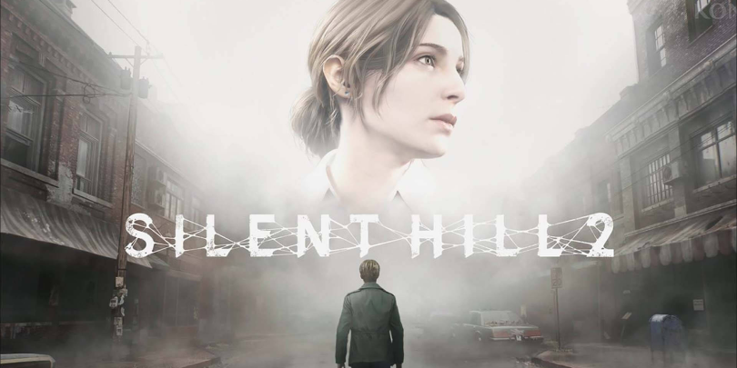
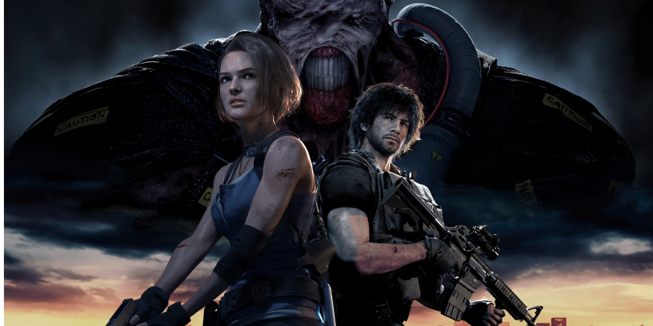

Elden Ring
GENRE: Action RPG, Dark Fantasy, Open-World, Adventure.
DEVELOPER: FromSoftware.
Players take on the role of a "Tarnished," a fallen warrior on a quest to restore the shattered Elden Ring and become the Elden Lord. The game focuses on open-world exploration, challenging combat,
and uncovering hidden lore through environmental storytelling. Players can customize their character, battle powerful enemies and bosses, and explore a world filled with secrets, mystical forces, and deep, interconnected mythos.,

Valorant
GENRE: Tactical Shooter, First-Person Shooter (FPS), Multiplayer, Strategy.
DEVELOPER: Riot Games.
Valorant is a free-to-play tactical first-person shooter developed by Riot Games. The game blends precise gunplay with hero-based abilities, offering a team-based experience where players compete in 5v5 matches. Each player selects an "Agent,"
a character with unique abilities that add strategic depth to the gameplay. The main game mode is a bomb-planting/defusal format, where attackers attempt to plant a device (the "spike") while defenders try to prevent them.

Silent Hill 2 Remake
GENRE: Survival Horror, Psychological Horror, Action-Adventure.
DEVELOPER: Bloober Team.
The game retains the original’s emphasis on psychological horror, atmosphere, and narrative, while updating visuals and gameplay mechanics. Players must solve puzzles, manage limited resources, and face horrifying monsters, with a focus on survival in a haunting and oppressive environment.
The game uses a third-person perspective, with combat and exploration playing key roles, while its deep story and unsettling themes provoke thought about guilt, grief, and the human psyche.

Resident Evil 3 Remake
GENRE: Survival Horror, Third-Person Shooter, Action-Adventure.
DEVELOPER: Konami Productions.
Resident Evil 3 Remake follows Jill Valentine, a former S.T.A.R.S. member, as she tries to escape Raccoon City, which is overrun by zombies and monstrous creatures due to the outbreak of the T-virus.
Along the way, Jill is relentlessly pursued by the bioengineered Nemesis, a terrifying creature sent by the Umbrella Corporation to eliminate her and other survivors.